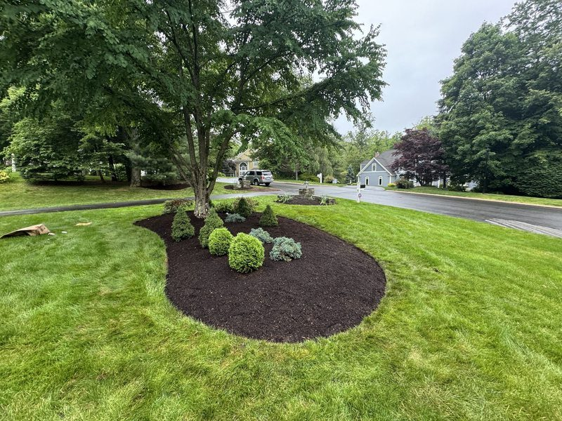
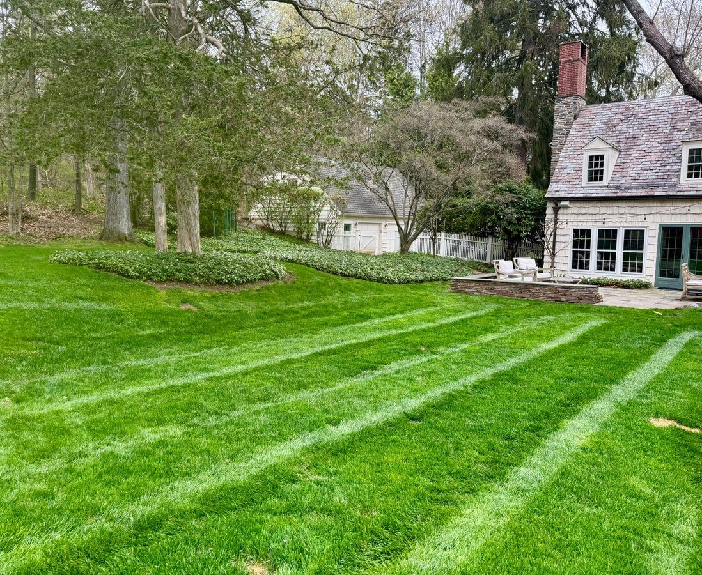
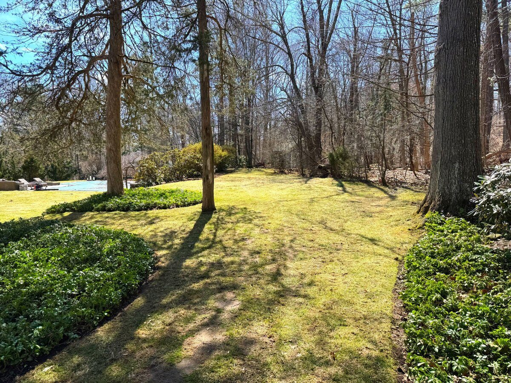

Residential Properties
Leaf removal, bed cleanup, and debris collection scoped to the size and layout of the yard.
Seasonal Cleanups
Fall cleanup and seasonal cleanup availability is limited and scheduled based on property size, service area, access, and disposal requirements.
Larger properties can require coordinated crews, additional equipment, debris collection, hauling, lawn detail, bed cleanup, and repeated passes as leaves continue falling throughout the season. Our estate grounds management work reflects the same organization and follow-through we bring to fall cleanup on demanding, large-acreage properties — without identifying any private client or site.
See Our Estate Grounds Management →Leaf removal, bed cleanup, and debris collection scoped to the size and layout of the yard.
Coordinated crews and equipment for substantial leaf volume, large lawns, and multiple landscape beds.
Reliable scheduling that keeps entrances, lawns, and common areas presentable as leaves accumulate.
Cleanup scheduled around business hours and access needs to keep grounds and entrances presentable.



Fall cleanup scheduling is based on property size, service area, access, disposal requirements, weather, and seasonal capacity. Reaching out early in the season gives the most flexibility for timing, especially for larger properties or multiple visits.
Hauling and disposal is included where specified in the scope of work. We'll confirm what's included for your property before the cleanup begins.
Yes. Landscape-bed cleanup is a standard part of our fall cleanup service, alongside lawn leaf removal and property-edge cleanup.
Yes. Larger properties and estates often require coordinated crews, additional equipment, and repeated passes as leaves continue to fall. We scope this work individually based on the property.
Yes. We work with HOAs, condominiums, and commercial properties to keep entrances, lawns, landscape beds, and common areas presentable as leaves accumulate.
Where appropriate, a final mowing can be included as part of the cleanup scope. Let us know if you'd like this included when requesting an estimate.
Yes. Properties with significant leaf volume or extended drop periods can request more than one cleanup visit. This is scoped based on the property and scheduled around seasonal capacity.